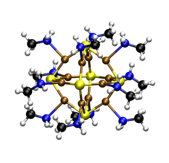
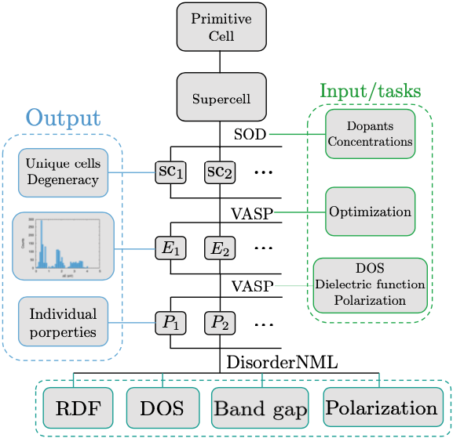
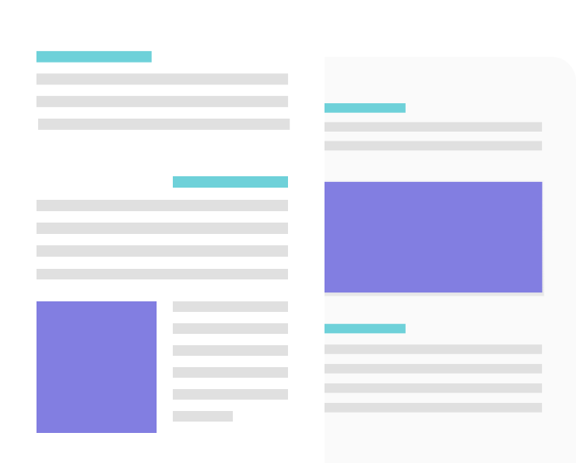

Mission - New Materials Lab is an initiative focused on the understanding, design and optimization of new materials using computer simulations.
Approach - The discovery and implementation of new materials and technologies in industry requires the fast and efficient search and prediction of material properties and functionalities. At New Materials Lab, we strive to combine first-principles electronic structure theory and multi-scale methods with the development of robust high-throughput frameworks and data-driven approaches to accelerate materials discovery.
Application - We predict and explore the optoelectronic and temperature-dependent properties of materials related to renewable energies and other technologies with a relevant impact in our society, such as thermoelectricity, solar cells, catalysis or aerospace.
New Materials Lab is an initiative created by European Comission funding through Marie-Curie Action: "High throughput computing for accelerated photovoltaic material discovery: from material database to the new generation of photovoltaic materials" (HT-PHOTO-DB: H2020-752608). This project is based on the combination of databases with development of hight-throughput frameworks to accelerate the discovery of new and more efficientent materials for photovoltaic devices. However, New Materials Lab is also involved in other projects in which computational materials science and data-driven approaches can be applied to accelerate the discovery of new materials. More...

